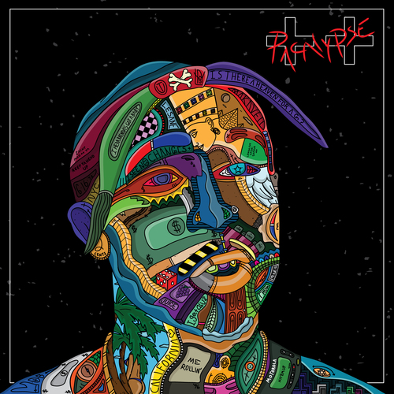
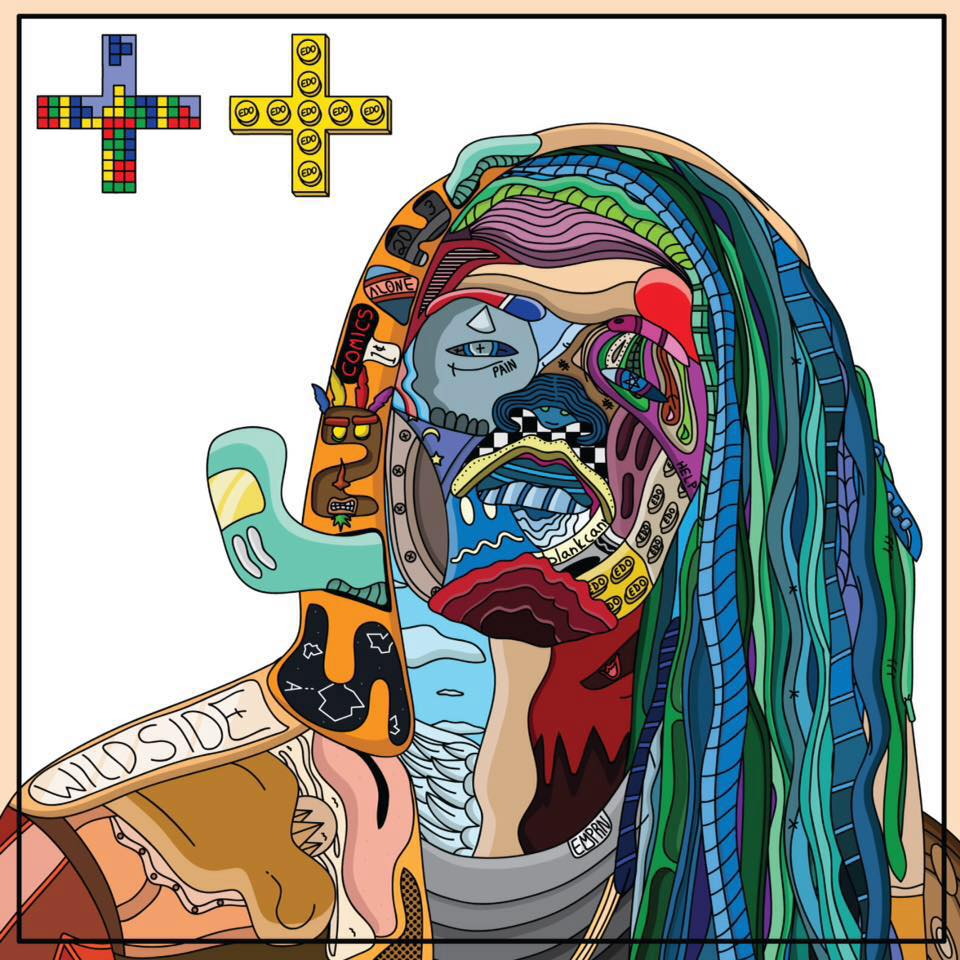

Olivier & Edo
Edo’s mission is infinite and grand, and he exudes this through his art. His work is a nod to the greats, specializing in intricate and colorful portraits of inspirational artists and individuals like Muhammed Ali, Andy Warhol, and late Chicago DJ Timbuck2, and they tell a story through images and words filling in their faces. He did this as a way to honor those lost in his own life. A member of the Treated Crew in Chicago, Edo’s passions do not simply lie in art, but in design, whether it be graphic or clothing, or in music, it is clear to see the historical and popular culture influence within Edo’s work.
amfm: Your most recent works, The Infinite Inception I/II are a part of a two part series, one dedicated to your mother, and the other to your late father, why was this something you sought to explore with your work and how have they influenced you as an artist?
edo: Well honestly, my parents didn't necessarily influence me as much as I would've wanted them to, if anything, my mom has been a huge support you know. She sacrificed a lot for me. My father was never really around, which also really motivated me to go extremely hard at what I do to show him that I belong here. I'm not a mistake you know. When all the smoke clears "metaphorically speaking," I wouldn't be here without my parents, so my showcases were based on that. A dedication to both of them for creating me. I love my parents, both of them. They've made some mistakes in their lives but they're still my parents and I think that they did alright. I think I turned out okay. It shows through the art, for sure!
amfm: Your father passed away and you said you channeled that all into your art. You fueled the emotions you were feeling into portraits of other lost famous individuals. How did this evolve the work, or change how you viewed it and that emotion you put into it? How was creating art during this monumental loss a point of catharsis for you?
edo: I think my work evolved tremendously. I find beauty in pain you know, as crazy as that might sound initially. We, as artist, honestly need to feel certain emotions to capture certain mediums in art. It helps. It was very tough for me to do some of those pieces but it also helped me release built up pain & frustration. Art has always done that for me & it really showed up when I need it the most.
amfm: Your work is very influenced by popular culture and hip hop culture. You are also a member of the Treated Crew. How does popular culture and hip hop culture find it's way into your work and how do you think this changes the way people interact with the work? Where do your own personal art interests and influences collide with popular culture and hip hop? What are some things you like to explore with your work?
edo: I love music! It's pretty much art with voice & beats you know. Another outlet to get out what you want to say. The culture/ scene is something I don't necessarily try to portray with my art but it definitely has some influence on certain pieces. I'm usually listening to that type of music when I'm designing too, so subconsciously it creeps it's way in there every now & then. As far as how I think people interact with it..... I feel as though everybody has a certain take on my art you know. All feedback has been amazing, but even if it wasn't I don't think that would necessarily change anything you know. I'm humbled by all the love my art gets, truly, but either way it goes my love for it won't change. My own personal interests & influence is really eclectic. The culture definitely plays a part, but more of a smaller part due to me being all over the place with genres & things of that nature. As far as what I want to explore with my work... That's simple..... Everything. I want to touch bases with everything. I want to be free. That's what art is to me; freedom..... Freedom to explore the unknown. That's my truth. Pure freedom, infinitely.
|  |  |
1 | 2
For more from Edo & Olivier:
Edo's Website
Edo's Instagram
Olivier's Instagram
photo credits: justin dwuan redding
styling: ryan alexander / clothes courtesy of maybe sunday